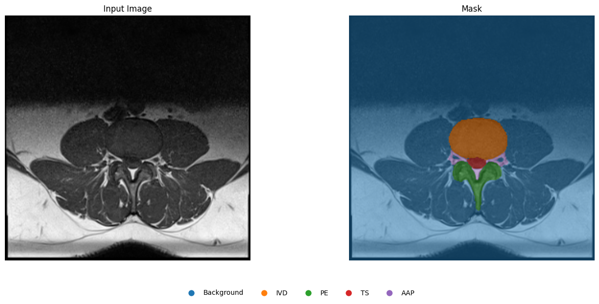
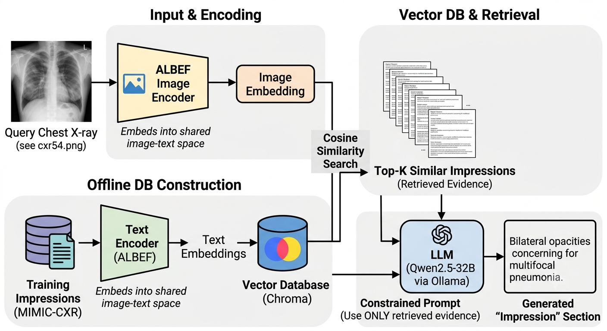
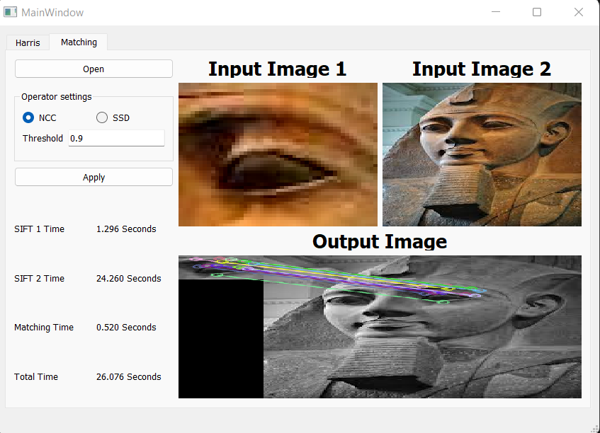
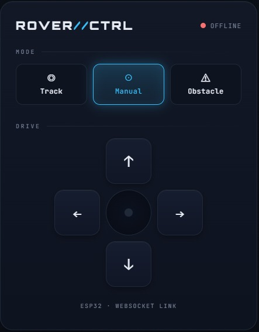
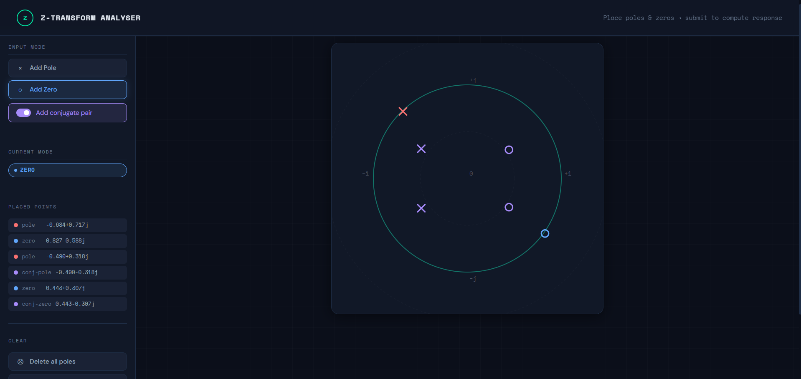
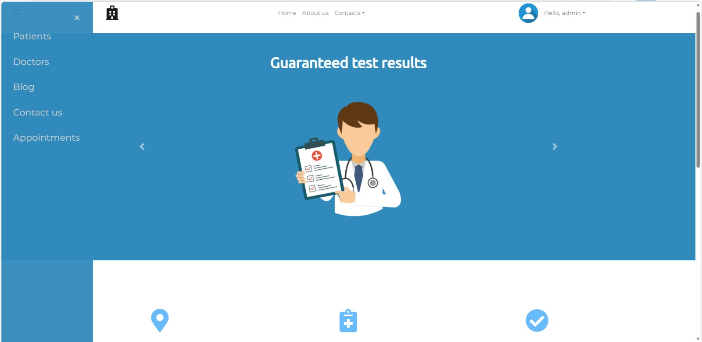
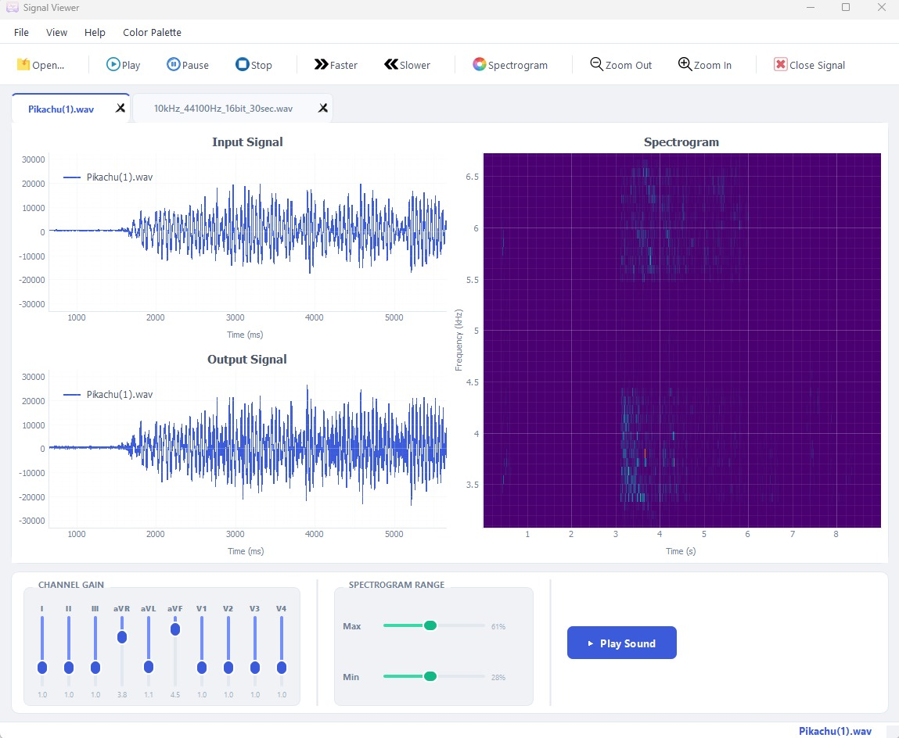
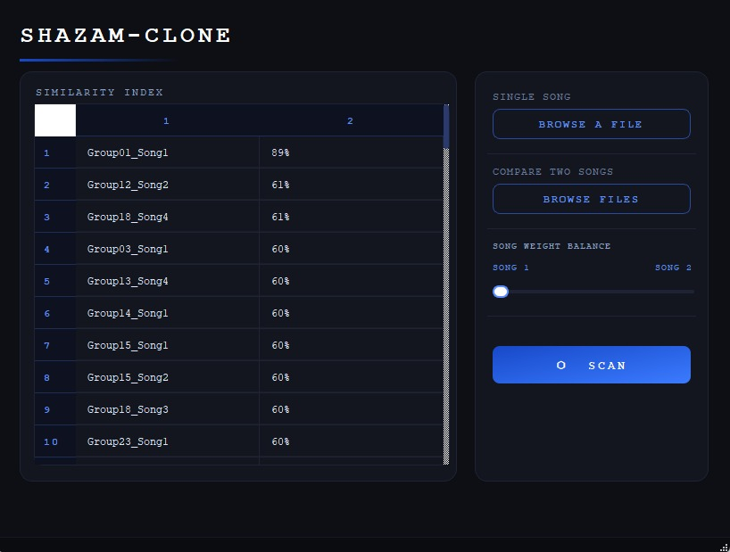
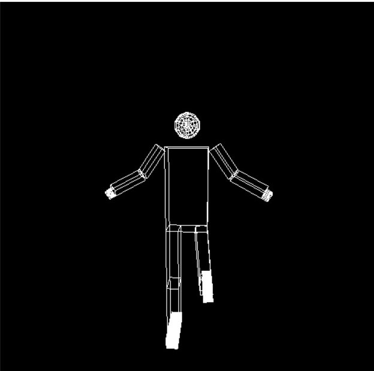
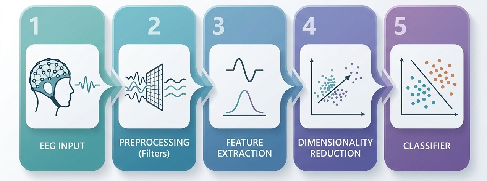

Lumbar Spine MRI Segmentation
A U-Net with Squeeze-and-Excitation attention that segments five lumbar spine structures from axial MRI to support diagnosis of lumbar spinal stenosis. Tuned via Weights & Biases hyperparameter sweeps, it reaches a 92.78% test Dice score, outperforming the published benchmark on the dataset.

Multimodal RAG for Chest X-ray Impression Generation
A multimodal Retrieval-Augmented Generation (RAG) system that generates clinically grounded chest X-ray Impression sections by retrieving visually similar cases from MIMIC-CXR using an ALBEF image encoder and a Chroma vector database. Retrieved reports are passed to a local Qwen2.5-32B model (via Ollama) under evidence-constrained prompting to reduce hallucinations. The pipeline achieves a CheXbert micro-F1 of 0.363.

Computer Vision Library
Classical CV algorithms implemented from scratch: Canny, Hough, Harris, SIFT, K-Means, Mean-Shift, Otsu, and a face detection and recognition pipeline, with an interactive interface.

Self-Driving Car
Arduino/ESP32 car controlled from a Progressive Web App over WiFi, with OpenCV lane detection for autonomous rule-based steering.

Z-Plane Digital Filter Visualizer
Browser tool for designing digital filters by placing poles and zeros, showing magnitude and phase response with optional all-pass correction.

Hemodialysis Clinic Web App
Full-stack clinic management app with role-based access for patients, physicians, and admins, and Google Calendar appointment sync.

Sound Equalizer
Desktop DSP app for real-time 10-band audio equalization, with animated before/after signals and a customizable spectrogram.

Song Recognition
Audio fingerprinting with mel-spectrogram and MFCC features, perceptual hashing, and Hamming-distance matching.

Articulated 3D Human Figure
Interactive OpenGL/GLUT human figure with keyboard-controlled joints and full 3D camera navigation.

EEG Seizure Detection
Seizure detection on CHB-MIT EEG using frequency/statistical features, PCA, and an SVM classifier.